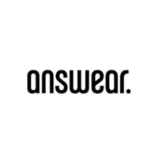
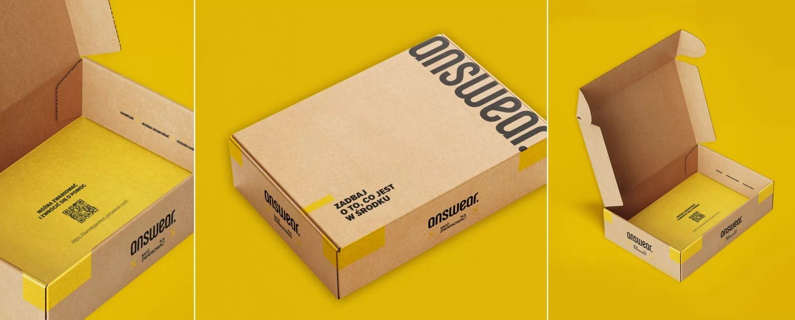
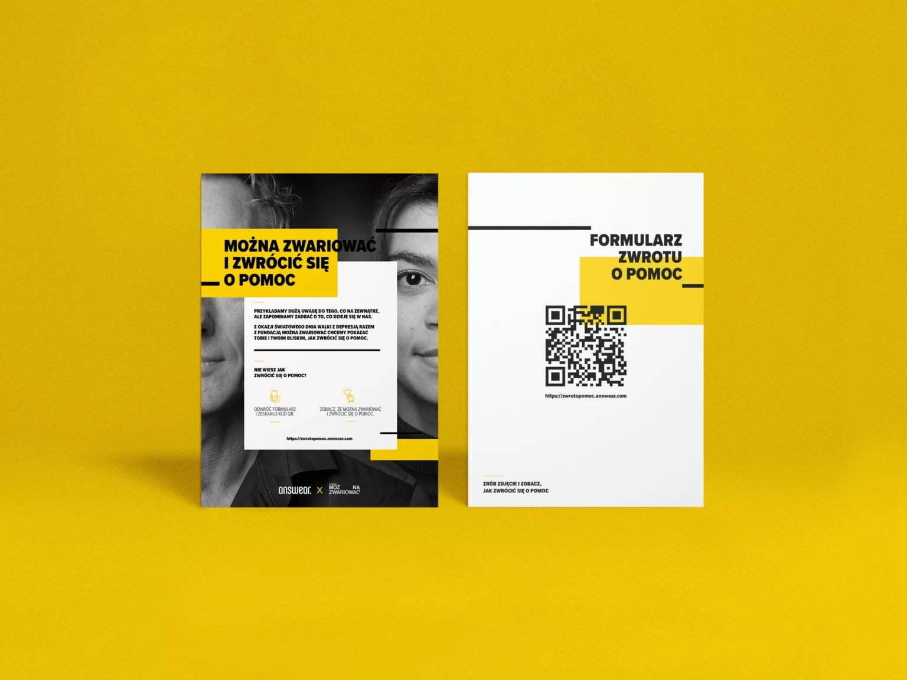
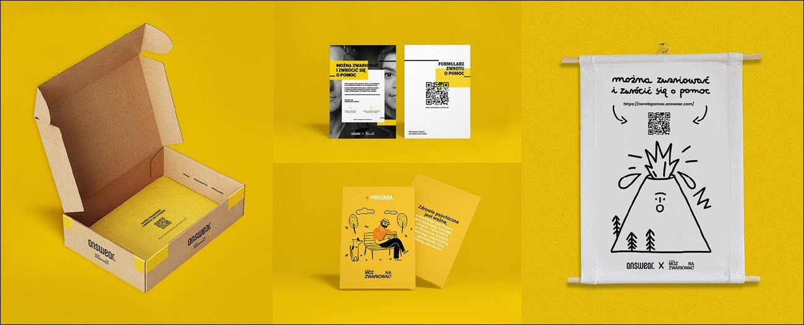
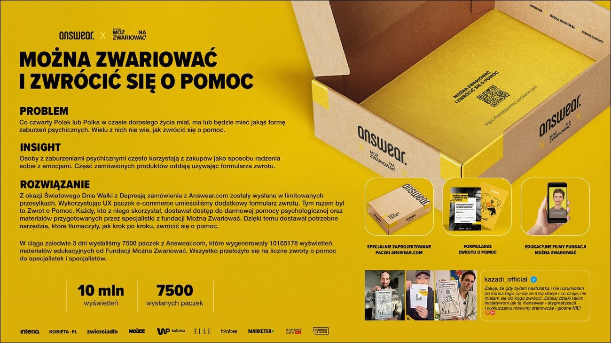

Współpraca
FMZ x Answear Zwrot o pomoc – zadbaj o to, co jest w środku


Można zwariować i zwrócić się o pomoc
Z okazji Światowego Dnia Walki z Depresją (23 lutego 2023) marka Answear.com, Fundacja Można Zwariować i agencja Feeders przygotowały pro bono projekt edukacyjny „Zadbaj o to, co jest w środku”.
Przykładamy dużą uwagę do tego, co na zewnątrz, ale zapominamy zadbać o to, co dzieje się w nas. Dlatego zamówienia z Answear.com trafiły do klientów w specjalnie zaprojektowanych paczkach, a w środku – oprócz ubrań – czekał dodatkowy formularz zwrotu. Tym razem był to Formularz Zwrotu o Pomoc.
Jak to działało?
Formularz miał kod QR prowadzący do strony zwrotopomoc.answear.com. Każda osoba, która z niego skorzystała, dostawała dostęp do bezpłatnej pomocy psychologicznej oraz materiałów przygotowanych przez specjalistki i specjalistów Fundacji Można Zwariować – narzędzi, które krok po kroku tłumaczą, jak zwrócić się o pomoc.
Do paczek trafiła też nasza broszura PRISMA o tym, jak wspierać bliską osobę w kryzysie psychicznym.


Nadaj i przyjmij zwrot o pomoc
Na stronie kampanii powstała seria filmów edukacyjnych – rozmów ze specjalistkami i specjalistami Fundacji. Podpowiadają w nich, jak zwrócić się o pomoc do bliskich, dalszych znajomych i specjalistów, a także jak uważnie i cierpliwie przyjąć taką prośbę, gdy to ktoś zwraca się do nas.
Mówienie o swoich problemach psychicznych ma znaczenie w wychodzeniu z depresji. Im więcej rozmawiamy o zdrowiu psychicznym, tym bardziej przestaje ono być tematem tabu.
Efekty
W ciągu zaledwie 3 dni wysłaliśmy 7 500 paczek, które wygenerowały ponad 10 milionów wyświetleń materiałów edukacyjnych Fundacji Można Zwariować. Wszystko przełożyło się na liczne zwroty o pomoc do specjalistek i specjalistów.
Kampania otrzymała 3 nominacje do nagród KTR i trafiła do Casebooka IAB MIXX Awards 2023.
